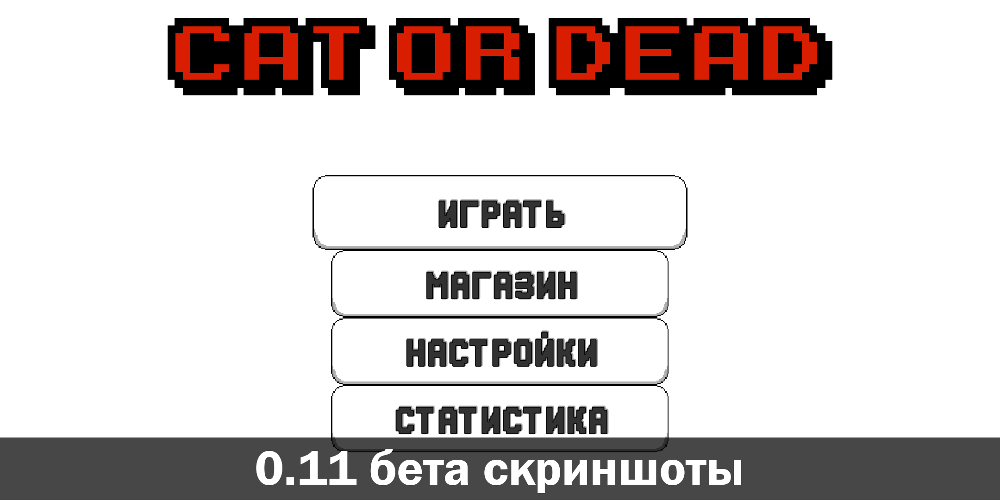
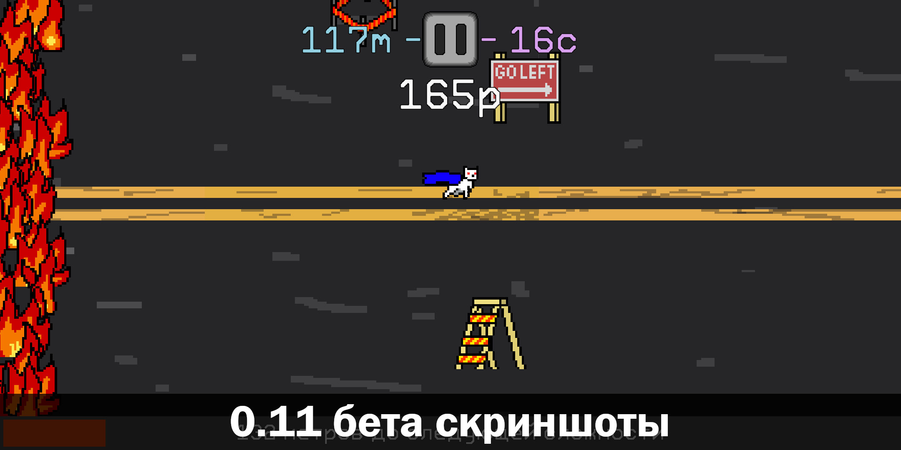
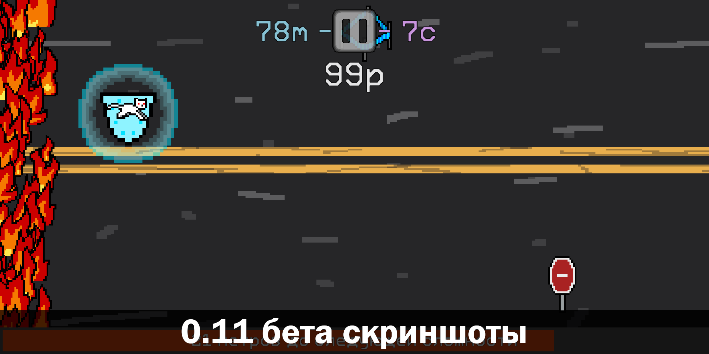
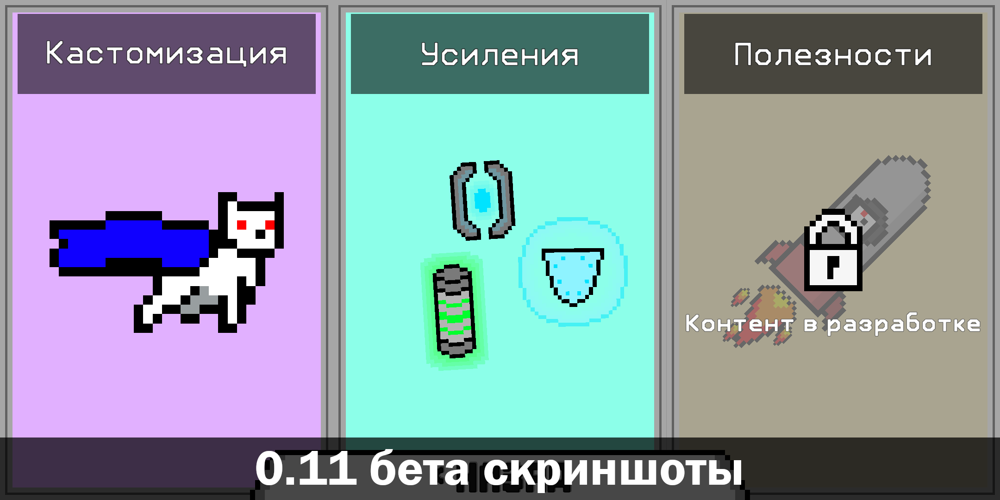

DT Archive
Архив проектов - Ещё живое | [на главную]
Название: Cat or Dead
Источники:
Google Play
GDrive
Исходный код: [закрытый]
ЯП: C#
Изначально экспериментальный раннер. Всё ещё не закончен.
Здесь ты управляешь котом, что убегает от пожара. Большинство препятствий не убивают персонажа, а просто относят
его ближе к огню.
Скриншоты:



